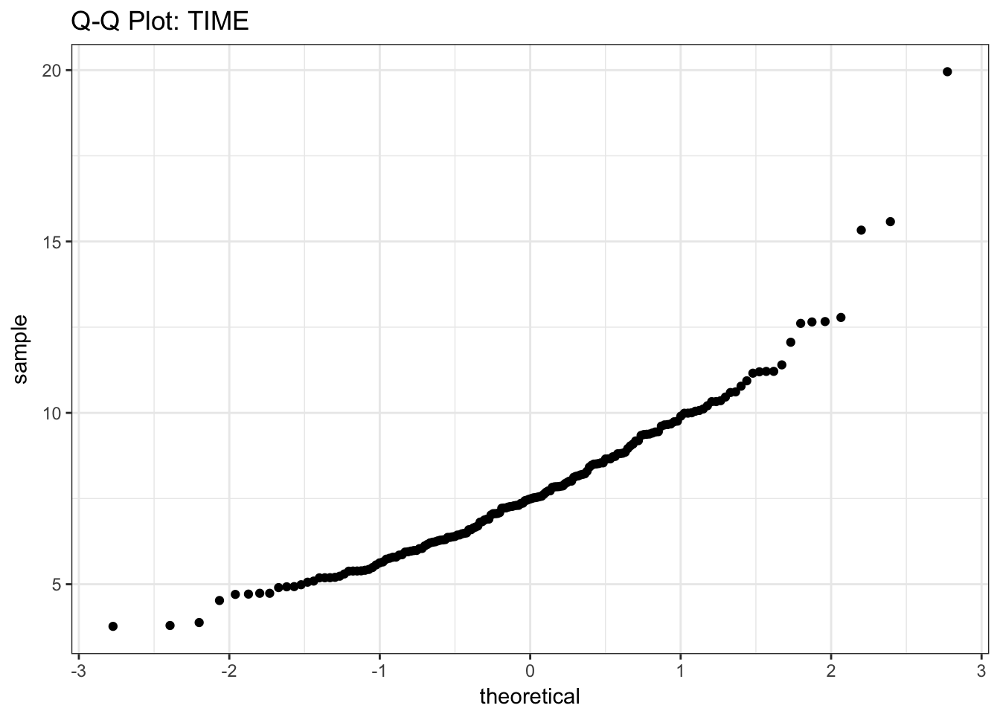
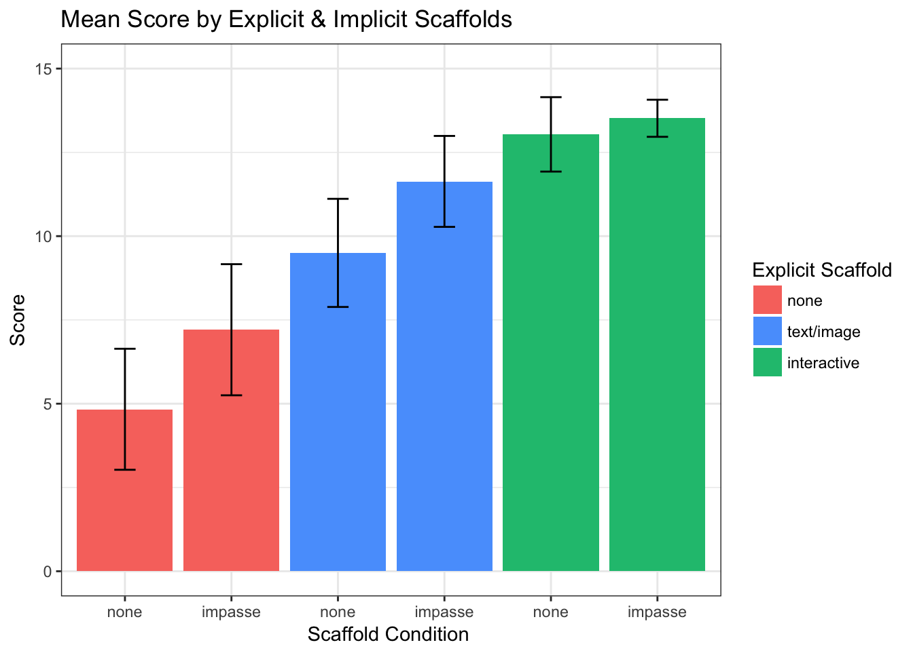
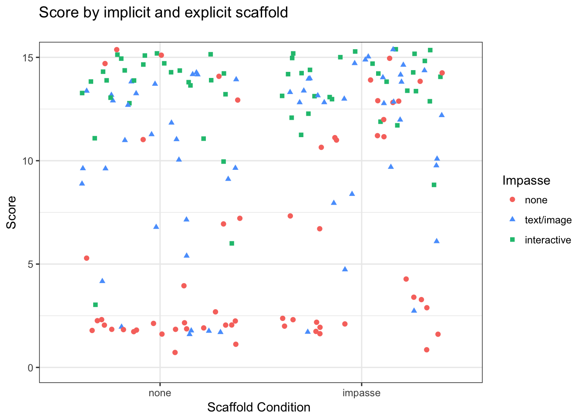
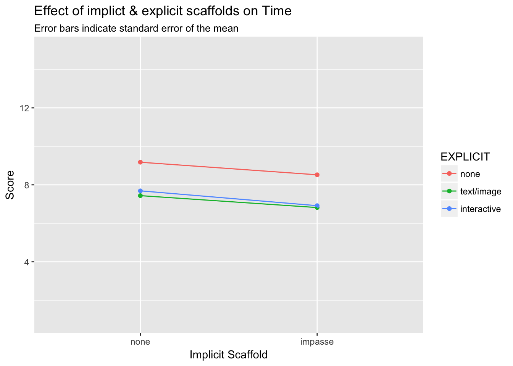

Study 3
Comparing Explicit and Implicit Scaffolding
Introduction
The purpose of this study is to compare the relative efficacy of explicit (ie. visually-salient text or images that serve instructional purpose) and implicit (ie. task and question structure) scaffolding for an unconventional statistical graph. We hypothesize that implicit techniques—specifically presenting a task that forms a mental impasse for the reader—will be more supportive of correct graph interpretation than explicit graph-reading instructions. We base this hypothesis on prior observation and experimental work (Fox & Hollan, in preparation) which revealed that when presented with an unconventional graph with structural elements (ie. axes and grid) that resembled conventional graphs, learners did not always realize they did not understand how the graph was meant to be read. We propose that prior knoweldge of conventional graph systems acts as a form of “graphical fixedness”, that learners must overcome to form correct mental models for new representational systems.
Hypotheses
Based on the results from Study 2 we predict …

Methods
Design
We utilized a 3 (explicit scaffold: none, text/image, interactive) X 2 (implicit scaffold: none, impasse) between-subjects factorial design, with response time and score (max = 15) as dependent variables.
| EXPLICIT | ||||
|---|---|---|---|---|
| IMPASSE | none | text/image | interactive | All |
| none | 30 | 30 | 27 | 87 |
| impasse | 29 | 30 | 29 | 88 |
| All | 59 | 60 | 56 | 175 |
Participants
175 students (59 % female) registered as STEM majors at a public university in the United States participated in exchange for course credit (age: 18 - 33 years).
Measures
Response Accuracy
The mean score across the entire sample was approximately 10 points (out of 15), with a standard deviation of 0.38 , and values ranging from 1 to 15 points.

A Shapiro-Wilk test for normality yielded a value of 0.8064857, p = 5.8537426\times 10^{-14} suggesting that the distibution is significantly non-normal.


Response Latency
The mean total runtime across the sample was approximately 8 minutes, with a standard deviation of 0.17 minutes, and values ranging from 4 to 20 minutes.

A Shapiro-Wilk test for normality yielded a value of 0.9184718, p = 2.5949359\times 10^{-8} suggesting that the data are from a non-normally-distributed population.


Results: Response Accuracy
EXPECTED RESULTS

ACTUAL RESULTS
#BAR CHART OF SCORE RESULTS
bar <- ggplot(df_subjects_3, aes(x = condition, y= triangular_score, fill=explicit))
bar + stat_summary(aes(y = triangular_score, group=condition), fun.y=mean, geom="bar", position="dodge") +
stat_summary(fun.data = mean_cl_normal, geom="errorbar", position = position_dodge(width=0.9),width=0.2) +
coord_cartesian(ylim=c(0,15)) +
theme_bw() +
theme(strip.background = element_blank()) +
labs (x = "Scaffold Condition ", y= "Score", fill="Explicit Scaffold") +
scale_x_discrete(labels=c("none", "impasse","none", "impasse","none", "impasse"))+
scale_fill_manual( values = c(red,blue,green),
name="Explicit Scaffold",
breaks=c(1,2,3),
labels=c("none","text/image","interactive")) +
ggtitle("Mean Score by Explicit & Implicit Scaffolds")
#SCATTERPLOT OF SCORE RESULTS
scatter <- ggplot(df_subjects_3, aes(x = explicit, y= triangular_score, color=impasse, shape=impasse))
scatter + geom_jitter()+
coord_cartesian(ylim=c(0,15)) +
theme_bw() +
theme(strip.background = element_blank()) +
labs (x = "Scaffold Condition ", y= "Score", fill="Condition") +
scale_x_discrete(breaks=c(1,2,3),
labels=c("none","text/image","interactive"))+
scale_color_manual( values = c(red,green),
name="Impasse",
breaks=c(1,2),
labels=c("none","impasse")) +
scale_shape_manual( values = c(19,17),
name="Impasse",
breaks=c(1,2),
labels=c("none","impasse")) +
labs(title = "Score by implicit and explicit scaffold",
subtitle = " ") 
#SCATTERPLOT OF SCORE RESULTS
scatter <- ggplot(df_subjects_3, aes(x = impasse, y= triangular_score, color=explicit, shape=explicit))
scatter + geom_jitter()+
coord_cartesian(ylim=c(0,15)) +
theme_bw() +
theme(strip.background = element_blank()) +
labs (x = "Scaffold Condition ", y= "Score", fill="Condition") +
scale_x_discrete(breaks=c(1,2),
labels=c("none","impasse"))+
scale_color_manual( values = c(red,blue,green),
name="Impasse",
breaks=c(1,2,3),
labels=c("none","text/image","interactive"))+
scale_shape_manual( values = c(19,17,15),
name="Impasse",
breaks=c(1,2,3),
labels=c("none","text/image","interactive"))+
labs(title = "Score by implicit and explicit scaffold",
subtitle = " ") 
| EXPLICIT Scaffold | ||||||
|---|---|---|---|---|---|---|
| none | text/image | interactive | ||||
| IMPASSE | mean | sd | mean | sd | mean | sd |
| none | 4.8 | 4.8 | 9.5 | 4.3 | 13.0 | 2.8 |
| impasse | 7.2 | 5.1 | 11.6 | 3.6 | 13.5 | 1.5 |
EXPLORATION
Factorial ANOVA :: SCORE by EXPLICIT*IMPLICIT
Model Pre-requisites
- Data Independence –> YES
- Normality –> NO (see Methods > Measures :: Scores are not normally-distributed)
- Equality of variances between groups –> NO (see Methods > Measures for boxplot)
- Balance design –> YES (equal number of obervations per group )
The data do meet the criteria to use ANOVA for analysis
#3. Equality of variance between groups
tapply(df_subjects_3$triangular_score, INDEX=df_subjects_3$condition, FUN=var)
## 111 121 211 221 311 321
## 23.385057 26.455665 18.672414 13.205747 7.883191 2.115764
#3. Balance design
tapply(df_subjects_3$triangular_score, INDEX=df_subjects_3$condition, FUN=length)
## 111 121 211 221 311 321
## 30 29 30 30 27 29Expected Results
Model Results
The results of a 3 (explicit-scaffold) X 2 (implicit-scaffold) factorial ANOVA reveal significant main effects of explicit-scaffold and (F = 50.75, p < 0.001) implicit-scaffold (F = 8.1, p = 0.005). The interaction between explicit & implict scaffolds was non-significant (F = 0.98, p = 0.38).
#FACTORIAL ANOVA ON SCORE
aov.out = aov(triangular_score ~ explicit * impasse, data=df_subjects_3)
options(show.signif.stars=T)
summary(aov.out)
## Df Sum Sq Mean Sq F value Pr(>F)
## explicit 2 1566.0 783.0 50.746 <2e-16 ***
## impasse 1 124.3 124.3 8.054 0.0051 **
## explicit:impasse 2 30.3 15.2 0.982 0.3767
## Residuals 169 2607.6 15.4
## ---
## Signif. codes: 0 '***' 0.001 '**' 0.01 '*' 0.05 '.' 0.1 ' ' 1
options(show.signif.stars=T)
TukeyHSD(aov.out, show.signif.stars=T)
## Tukey multiple comparisons of means
## 95% family-wise confidence level
##
## Fit: aov(formula = triangular_score ~ explicit * impasse, data = df_subjects_3)
##
## $explicit
## diff lwr upr p adj
## 2-1 4.566667 2.8637374 6.269596 0.0000000
## 3-1 7.285714 5.5528935 9.018535 0.0000000
## 3-2 2.719048 0.9932729 4.444822 0.0007727
##
## $impasse
## diff lwr upr p adj
## 2-1 1.684953 0.5125845 2.857321 0.0051079
##
## $`explicit:impasse`
## diff lwr upr p adj
## 2:1-1:1 4.6666667 1.7429837 7.5903496 0.0001186
## 3:1-1:1 8.2037037 5.1999050 11.2075024 0.0000000
## 1:2-1:1 2.3735632 -0.5752162 5.3223426 0.1916933
## 2:2-1:1 6.8000000 3.8763171 9.7236829 0.0000000
## 3:2-1:1 8.6839080 5.7351286 11.6326874 0.0000000
## 3:1-2:1 3.5370370 0.5332384 6.5408357 0.0109090
## 1:2-2:1 -2.2931034 -5.2418828 0.6556759 0.2244351
## 2:2-2:1 2.1333333 -0.7903496 5.0570163 0.2905214
## 3:2-2:1 4.0172414 1.0684620 6.9660208 0.0017176
## 1:2-3:1 -5.8301405 -8.8583717 -2.8019092 0.0000016
## 2:2-3:1 -1.4037037 -4.4075024 1.6000950 0.7582001
## 3:2-3:1 0.4802043 -2.5480269 3.5084356 0.9974622
## 2:2-1:2 4.4264368 1.4776574 7.3752162 0.0003665
## 3:2-1:2 6.3103448 3.3366808 9.2840089 0.0000001
## 3:2-2:2 1.8839080 -1.0648714 4.8326874 0.4419876
# library(phia)
# plot(interactionMeans(aov.out))

One way ANOVA :: SCORE by CONDITION
What between-group differences are significant?
note: the data do not meet pre-requisites for ANOVA
A one-way analysis of variance reveals significant differences between scaffold conditions (F = 22.3, p < 0.001). Post-hoc Tukey tests reveal differences between the following conditions:
(non-impasse)
111-211 p = 0.0001186 *** expected
211-311 p = 0.0109090 . expected
311-111 p = 0.0000000 *** expected
(impasse)
121-221 p = 0.0003665 *** NOT EXPECTED
221-321 p = 0.4419876 expected
321-121 p = 0.0000001 *** NOT EXPECTED
(between)
221-111 p = 0.0000000 *** expected
321-111 p = 0.0000000 *** expected
311-121 p = 0.0000016 NOT EXPECTED
321-211 p = 0.0017176 ***
121-111 p = 0.1916933 x NOT EXPECTED
211-121 p = 0.2244351 x NOT EXPECTED
221-211 p = 0.2905214 x NOT EXPECTED
311-221 p = 0.7582001 x NOT EXPECTED
321-311 p = 0.9974622 x NOT EXPECTED
aov.out = aov(triangular_score ~ condition, data=df_subjects_3)
options(show.signif.stars=T)
summary(aov.out)
## Df Sum Sq Mean Sq F value Pr(>F)
## condition 5 1721 344.1 22.3 <2e-16 ***
## Residuals 169 2608 15.4
## ---
## Signif. codes: 0 '***' 0.001 '**' 0.01 '*' 0.05 '.' 0.1 ' ' 1
options(show.signif.stars=T)
TukeyHSD(aov.out, show.signif.stars=T)
## Tukey multiple comparisons of means
## 95% family-wise confidence level
##
## Fit: aov(formula = triangular_score ~ condition, data = df_subjects_3)
##
## $condition
## diff lwr upr p adj
## 121-111 2.3735632 -0.5752162 5.322343 0.1916933
## 211-111 4.6666667 1.7429837 7.590350 0.0001186
## 221-111 6.8000000 3.8763171 9.723683 0.0000000
## 311-111 8.2037037 5.1999050 11.207502 0.0000000
## 321-111 8.6839080 5.7351286 11.632687 0.0000000
## 211-121 2.2931034 -0.6556759 5.241883 0.2244351
## 221-121 4.4264368 1.4776574 7.375216 0.0003665
## 311-121 5.8301405 2.8019092 8.858372 0.0000016
## 321-121 6.3103448 3.3366808 9.284009 0.0000001
## 221-211 2.1333333 -0.7903496 5.057016 0.2905214
## 311-211 3.5370370 0.5332384 6.540836 0.0109090
## 321-211 4.0172414 1.0684620 6.966021 0.0017176
## 311-221 1.4037037 -1.6000950 4.407502 0.7582001
## 321-221 1.8839080 -1.0648714 4.832687 0.4419876
## 321-311 0.4802043 -2.5480269 3.508436 0.9974622HYPOTHESIS 1: The formation of a question as a mental impasse will significantly improve performance on the problems
#CALULCULATE PAIRWISE DIFFERENCE & EFFECT SIZE (independent sample t-test with numeric y and binary x)
mainEffectGraph <- t.test(triangular_score ~ impasse, data=df_subjects_3)
mainEffectGraph
##
## Welch Two Sample t-test
##
## data: triangular_score by impasse
## t = -2.4278, df = 168.65, p-value = 0.01624
## alternative hypothesis: true difference in means is not equal to 0
## 95 percent confidence interval:
## -3.2762360 -0.3376616
## sample estimates:
## mean in group 1 mean in group 2
## 8.988506 10.795455
t <-mainEffectGraph$statistic[[1]]
t <-round(t,2)
df <-round(mainEffectGraph$parameter[[1]],0)
p <-mainEffectGraph[3]
r <- sqrt(t^2/(t^2+df))
r <-round(r,2)
r
## [1] 0.18
#explore descriptive statistics based on each IV
desc_control <- by(df_subjects_3$triangular_score, list(df_subjects_3$impasse), stat.desc, basic=FALSE)
desc_control
## : 1
## median mean SE.mean CI.mean.0.95 var
## 11.0000000 8.9885057 0.5655376 1.1242515 27.8254477
## std.dev coef.var
## 5.2749832 0.5868587
## --------------------------------------------------------
## : 2
## median mean SE.mean CI.mean.0.95 var
## 13.0000000 10.7954545 0.4838454 0.9616951 20.6013584
## std.dev coef.var
## 4.5388719 0.4204429
nonimpasse_mean = desc_control$`1`[2]
nonimpasse_SD = desc_control$`1`[6]
impasse_mean = desc_control$`2`[2]
impasse_SD = desc_control$`2`[6]The main effect of impasse in the factorial ANOVA support this claim. Additionally, a post-hoc independent samples t-test reveals that participants (in any scaffold condition) presented with non-impasse questions (M = 8.99, SD = 5) are significantly lower than those with impasse questions (M = 10.8, SD = 5), t(169) = -2.43, p = 0.0162418 , r = 0.18.
A) Examine enter question set (only first 5 are scaffolded)
B) Examine scaffolded phase only
Results: Response Time
| EXPLICIT Scaffold | ||||||
|---|---|---|---|---|---|---|
| none | text/image | interactive | ||||
| IMPASSE | mean | sd | mean | sd | mean | sd |
| none | 9.2 | 3.2 | 7.4 | 1.9 | 7.7 | 2.3 |
| impasse | 8.5 | 2.0 | 6.8 | 1.5 | 6.9 | 1.5 |
## Anova Table (Type II tests)
##
## Response: tt_min
## Sum Sq Df F value Pr(>F)
## explicit 105.60 2 11.4171 2.235e-05 ***
## impasse 20.17 1 4.3607 0.03828 *
## explicit:impasse 0.18 2 0.0197 0.98054
## Residuals 781.54 169
## ---
## Signif. codes: 0 '***' 0.001 '**' 0.01 '*' 0.05 '.' 0.1 ' ' 1

Post-Hoc Analyses
Alternative Answers
Mean scores for explicit(control)+impasse are significantly higher than for explicit(control)+non-impasse. However, the variance is also high, suggesting that while some learners were given pause to re-evaluate their interpretation, others persisted with incorrect answers.
What are the alternative (wrong) answers for individuals in the explicit(control)+impasse condition?
Copyright © 2017 Amy Rae Fox. All rights reserved.